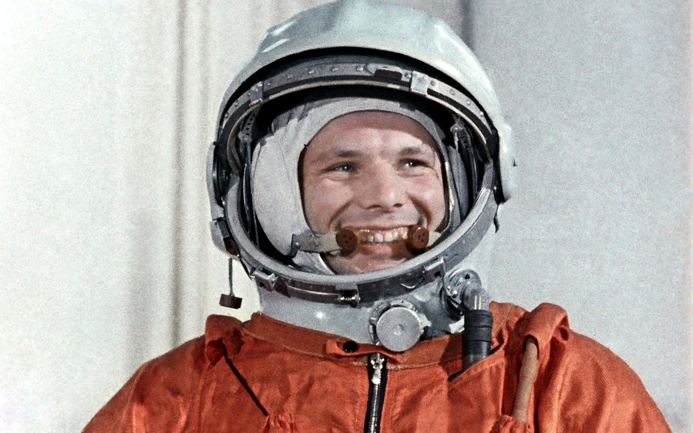
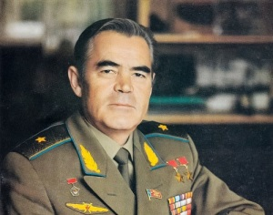
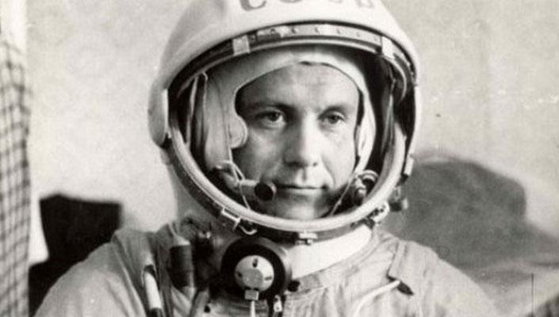

Хронологія польотів
-
1961 рік
Старт корабля «Восток» було здійснено 12 квітня 1961 року о 9:07 за московським часом з космодрому Байконур, на борті з Юрієм Гагаріним. Корабель вийшов на не розраховану високу орбіту . У випадку відмови гальмівної установки сходження з неї могло продовжуватися близько 10 діб, на що система життєзабезпечення корабля не була розрахована. -
1962 рік
Перший в світі груповий космічний політ. Одночасно з кораблем «Восток-3», на борті якого був Андріан Ніколаєв в космосі перебував космічний корабель «Восток-4», який пілотував космонавт Попович Павло Романович. В польоті пітримувався радіозв'язок між кораблями і Землею. На Землю вперше передавались телевізійні зображення космонавтів. -
1962 рік
12 серпня — 15 серпня 1962 Павло Поповичем здійснив на кораблі-супутнику «Восток-4» перший у світі груповий політ двох пілотованих кораблів, спільно з А. Г. Ніколаєвим, який пілотував космічний корабель «Восток-3». В ході групового польоту були проведені перші експерименти з радіозв'язку між екіпажами двох кораблів в космосі.